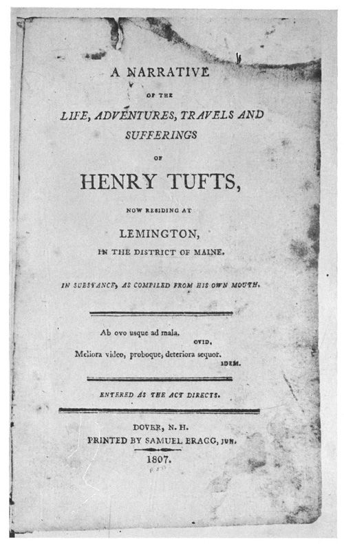
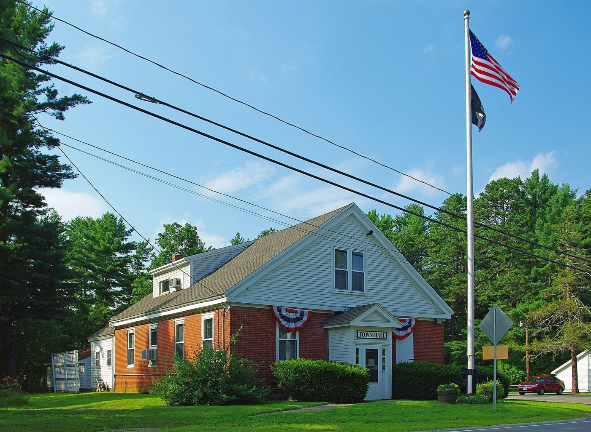
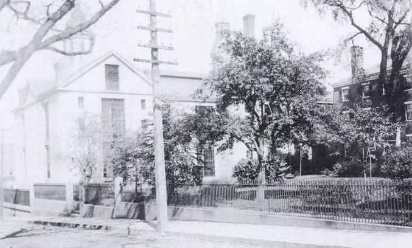

Biography
Henry Tufts is the family’s most notorious member. He signed the Association Test and served as a private, but he is remembered for his 1806 memoir of crime, imprisonment, escape, and years of doctoring learned among the Saint Francis Indians.
Service Record
Town: Boston; Newmarket and Lee, N.H. · Dates: abt. 1735 – [death not in extract]
Born about 1735; signed the Association Test of loyalty circulated by order of the Continental Congress; private in the Revolution. (Tufts Kinsmen, Vol. I, p. 136–137, family no. 25-1; owner-supplied extract; page scan not on file)
Apprenticed as a tailor on Fleet Street, Boston’s North End; followed his brother Thomas to Newmarket, N.H.; petitioned in Nov. 1765 for the division of Durham and the forming of the parish of Lee. (Tufts Kinsmen, Vol. I, p. 105, 136–137, family no. 25-1; owner-supplied extract; page scan not on file)
Published his memoir, The Life, Adventures, Travels and Sufferings of Henry Tufts, at Dover, N.H., in 1806. (Tufts Kinsmen, Vol. I, p. 136–137, family no. 25-1; owner-supplied extract; page scan not on file)
Convicted June 1793 and sentenced to hang on 14 Aug. 1793 (the book calls the sentence unjust); commuted to life imprisonment at Castle Island, Boston Harbor; escaped from the Salem jail in 1798. (Tufts Kinsmen, Vol. I, p. 136–137, family no. 25-1; owner-supplied extract; page scan not on file)
Spent three years with the Saint Francis Indians of Québec, learning doctoring from Molly Ockit; the town of Limerick paid him for doctoring its poor. (Tufts Kinsmen, Vol. I, p. 136–137, family no. 25-1; owner-supplied extract; page scan not on file)
Family Connection
Family number 25-1 in Tufts Kinsmen, Vol. I. Parents are not named in the extract seen.
⚑ Unverified
The order of imprisonment and escape is as given in the extract. The Tufts Kinsmen Vol. I statements on this page come from an extract supplied by the owner and have not yet been checked against a page scan (citation rule: page scan not on file). No other source on this site has yet been checked for this man.
Pictures









Further Research Links
Outside resources for further research. Secondary and user-contributed sites (blogs, family trees, memorial sites, Wikipedia) are not verified here.
- Full PDF (Internet Archive)
- Tufts Genealogy Blog – Revolutionary Soldiers (entry includes Henry Tufts Jr. service details) (Tufts Genealogy blog)
- Winter Hill Fortifications (Somerville, Massachusetts) – Siege of Boston (Wikipedia) link reported broken (checked 2026-11-03)
- West Point, New York – Continental Army encampment (Wikipedia)